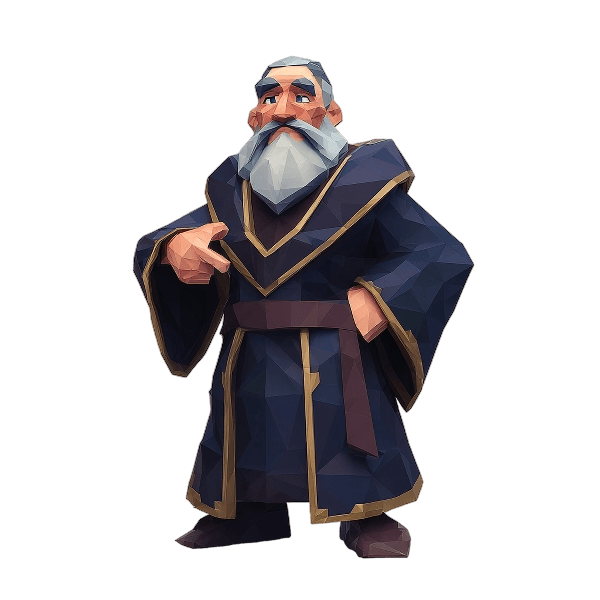

✓
No habits scheduled today.
Enjoy your rest day! 😴

THE FIRST AWAKENED
“Choose the vows you will keep. The system counts only what you do.”
YOUR FIRST VOW
The system is waiting for your first promise.